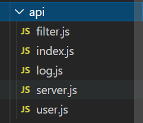

1、首先新建request.js文件，用来创建axios实例，这文件可以放在util目录中，也可以放在api目录中
x
1import axios from 'axios';2import qs from 'qs';3
4const service = axios.create({5 // baseURL: 'http://localhost:8080/api',6 baseURL: process.env.NODE_ENV === 'production' ? 'http://110.40.230.26:8081/' : 'http://localhost:8080/api',7 // 超时时间8 // timeout: 100009});10
11service.interceptors.request.use(12 config => {13 // 设置请求头，添加token14 const Token = localStorage.getItem('login_token') ? JSON.parse(localStorage.getItem('login_token')).token : null;15 Token && (config.headers.Token = Token);16 // 有需要的话，可以转换数据格式17 if (config.method === 'post') {18 config.data = qs.stringify(config.data, { arrayFormat: 'repeat' });19 }20 return config;21 },22 error => {23 console.log(error);24 return Promise.reject();25 }26);27
28// 设置post请求头29service.defaults.headers.post['Content-Type'] = 'application/x-www-form-urlencoded;charset=utf-8';30
31service.interceptors.response.use(32 response => {33 if (response.status === 200) {34 // 这里的返回结果，关乎使用时的处理逻辑35 return response.data;36 } else {37 Promise.reject(response);38 }39 },40 // 在error里面可以根据状态码刷新token，或者重新登陆什么的41 error => {42 console.log(error);43 return Promise.reject(error);44 }45);46
47export default service;48
可以看这个博客:token刷新
然后是api目录

定义api管理文件，统一管理，可以与后端对应，每个表建立一个文件夹，也可以根据自己的想法划分文件，这里的目的就是模块化，比如user.js，里面，一般就放user有关的api
x
1import request from '../utils/request';2
3const user = {4 login(data) {5 return request({6 url: '/login',7 method: 'post',8 data: data9 });10 },11
12 registerUser(data) {13 return request({14 url: '/user/registerUser',15 data: data,16 method: 'post'17 });18 },19
20 searchUser(params) {21 return request({22 url: '/user/searchUser',23 method: 'get',24 params: params25 });26 },27
28};29
30export default user;
然后创建index.js文件，统一引入所有api，统一导出
xxxxxxxxxx1111import user from './user';2import server from './server';3import log from './log';4import filter from './filter';5
6export default {7 user,8 server,9 log,10 filter11}
先到main.js中全局引入
xxxxxxxxxx41// 引入api2import api from './api/index.js';3// 挂载到全局vue原型上4Vue.prototype.$api = api;
使用，以login为例
xxxxxxxxxx221this.$refs.login.validate(async (valid) => {2 if (valid) {3 try {4 const res = await this.$api.user.login(this.param);5 // 注意，这里的处理逻辑，与你前面定义的拦截器是相关的，可以自己定义规则6 if (res.code == 2000) {7 this.$message.success('登录成功');8 localStorage.setItem('login_token', JSON.stringify(res.data));9 this.$router.push('/');10 } else {11 this.$message.error(res.msg);12 }13 } catch (error) {14 console.log(error);15 this.$message.error('登陆失败');16 }17 } else {18 this.$message.error('请输入账号和密码');19 console.log('error submit!!');20 return false;21 }22});参考：链接